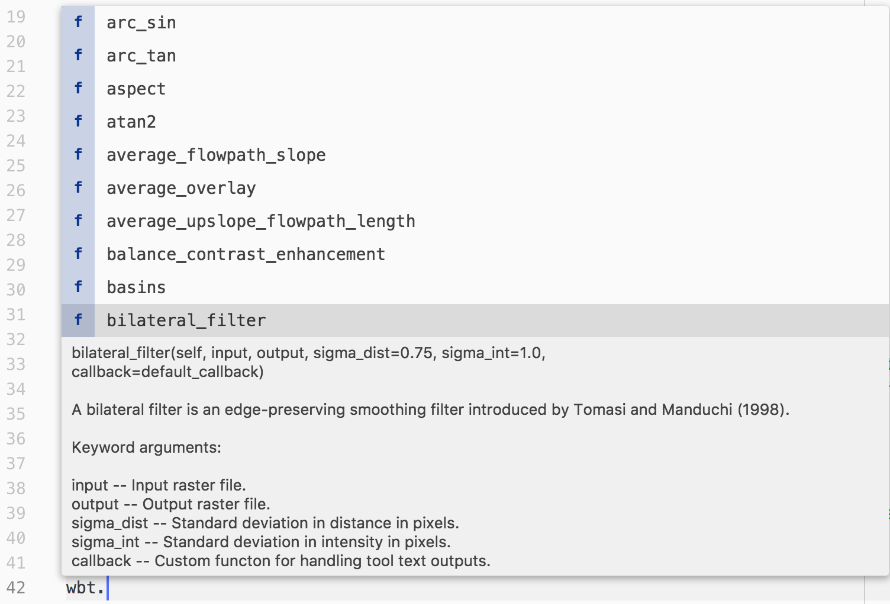
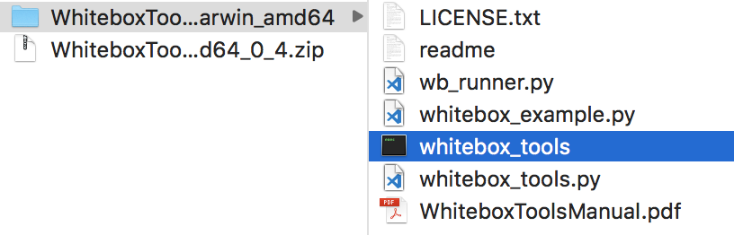
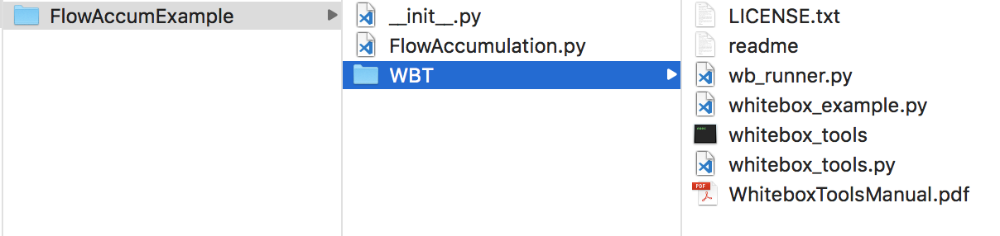

Interfacing with WhiteboxTools using Python scripting
- Using the whitebox_tools.py script
- Handling tool output
- Additional functions in whitebox_tools.py
- An example WhiteboxTools Python project
WhiteboxTools provides an elegant and powerful Python-based interface that allows for easy workflow automation of common geoprocessing tasks. This interface with the WhiteboxTools stand-alone executable is contained within the whitebox_tools.py script. Let's look at this Python programmer interface in this tutorial.
The following material has been extracted from the WhiteboxTools User Manual, which can be found in pdf form along with the download.
By combining the WhiteboxTools library with a high-level scripting language, such as Python, users are capable of creating powerful stand-alone geospatial applications and workflow automation scripts. In fact, WhiteboxTools functionality can be called from many different programming languages. However, given the prevalent use of the Python language in the geospatial fields, the library is distributed with several resources specifically aimed at Python scripting. This section focuses on how Python programming can be used to interact with the WhiteboxTools library.
Note that all of the following material assumes the user system is configured with Python 3. The code snippets below are not guaranteed to work with older versions of the language.
Using the whitebox_tools.py script
Interacting with WhiteboxTools from Python scripts is
easy. To begin, each script must start by importing the WhiteboxTools
class, contained with the whitebox_tools.py script; a new
WhiteboxTools object can then be created:
from WBT.whitebox_tools import WhiteboxTools
wbt = WhiteboxTools()
Depending on the relative location of the WhiteboxTools directory
and the script file that you are importing to, the import statement may
need to be altered slightly. In the above script, it is assumed that the
folder containing the WhiteboxTools files (including the whitebox_tools
Python script) is named WBT (Line 1) and that
the calling script is located in the parent directory of WBT.
See
An Example WhiteboxTools Python Project for more details on project
set-up. The use of wbt to designate the WhiteboxTools
object variable in the above script (Line 3) is just the convention
used in this manual and other project resources. In fact, any variable
name can be used for this purpose.
The WhiteboxTools class expects to find
the WhiteboxTools executable file (whitebox_tools.exe on Windows
and whitebox_tools on other platforms) within the same directory
(WBT) as the whitebox_tools.py script. If the binary
file is located in a separate directory, you will need to set the
executable directory as follows:
wbt.set_whitebox_dir('/local/path/to/whitebox/binary/')
# Or alternatively...
wbt.exe_path = '/local/path/to/whitebox/binary/'Individual tools can be called using the convenience
methods provided in the WhiteboxTools class:
# This line performs a 5 x 5 mean filter on 'inFile.tif':
wbt.mean_filter('/file/path/inFile.tif', '/file/path/outFile.tif', 5, 5)Each tool has a cooresponding convenience method.
The listing of tools in this manual includes information about each
tool's Python convienience method, including default parameter values.
Parameters with default values may be optionally left off of function
calls. In addition to the convenience methods, tools can be called using
the run_tool() method, specifying the tool name and a
list of tool arguments. Each of the tool-specific convenience methods
collect their parameters into a properly formated list and then
ultimately call the run_tools() method. Notice that
while internally whitebox_tools.exe uses CamelCase
(e.g. MeanFilter) to denote tool names, the Python interface of
whitebox_tools.py uses snake_case (e.g. mean_filter),
according to Python style conventions. The only exceptions are tools
with names that clash with Python keywords (e.g. And(),
Not(), and Or()).
The return value can be used to check for errors during operation:
if wbt.ruggedness_index('/path/DEM.tif', '/path/ruggedness.tif') != 0:
# Non-zero returns indicate an error.
print('ERROR running ruggedness_index')
If, like me, your data files tend to be burried deeply in layers of sub-directories, specifying complete file names as input parameters can be tedius. In this case, the best option is setting the working directory before calling tools:
from whitebox_tools import WhiteboxTools
wbt = WhiteboxTools()
wbt.work_dir = "/path/to/data/" # Sets the Whitebox working directory
# Because the working directory has been set, file arguments can be
# specified simply using file names, without paths.
wbt.d_inf_flow_accumulation("DEM.tif", "output.tif", log=True)An advanced text editor, such as VS Code or Atom, can provide hints and autocompletion for available tool convenience methods and their parameters, including default values (see below).
Sometimes it can be useful to print a complete list of available tools:
print(wbt.list_tools()) # List all tools in WhiteboxToolsThe list_tools() method also takes an
optional keywords list to search for tools:
# Lists tools with 'lidar' or 'LAS' in tool name or description.
print(wbt.list_tools(['lidar', 'LAS']))To retrieve more detailed information for a specific tool,
use the tool_help() method:
print(wbt.tool_help("elev_percentile"))tool_help() prints tool details including
a description, tool parameters (and their flags), and example usage at
the command line prompt. The above statement prints this report:
ElevPercentile
Description:
Calculates the elevation percentile raster from a DEM.
Toolbox: Geomorphometric Analysis
Parameters:
Flag Description
----------------- -----------
-i, --input, --dem Input raster DEM file.
-o, --output Output raster file.
--filterx Size of the filter kernel in the x-direction.
--filtery Size of the filter kernel in the y-direction.
--sig_digits Number of significant digits.
Example usage:
>>./whitebox_tools -r=ElevPercentile -v --wd="/path/to/data/" --dem=DEM.tif
>>-o=output.tif --filterx=25
A note on default parameter values
Each tool contains one or more parameters with default values. These will always be listed after any input parameters that do not have default values. You do not need to specify a parameter with a default value if you accept the default. That is, unless you intend to specify an input value different from the default, you may leave these parameters off of the function call. However, be mindful of the fact that Python assigns values to parameters based on order, unless parameter names are specified.
Consider the Hillshade tool as an example. The User Manual gives the following function definition for the tool:
hillshade(
dem,
output,
azimuth=315.0,
altitude=30.0,
zfactor=1.0,
callback=default_callback)
The dem and output parameters do not have
default values and must be specified every time you call this function.
Each of the remaining parameters have default values and can, optionally,
be left off of calls to the hillshade function. As an
example, say I want to accept the default values for all the parameters
except altitude. I would then need to use the named-parameter
form of the function call:
wbt.hillshade(
"DEM.tif",
"hillshade.tif",
altitude=20.0)
If I hadn't specified the parameter name for altitude,
Python would have assumed that the value 20.0 should be assigned to
the third parameter, azimuth.
Handling tool output
Tools will frequently print text to the standard
output during their execution, including warnings, progress updates and
other notifications. Sometimes, when users run many tools in complex
workflows and in batch mode, these output messages can be undesirable.
Most tools will have their outputs suppressed by setting the verbose mode
to False as follows:
wbt.set_verbose_mode(False)
# Or, alternatively...
wbt.verbose = FalseAlternatively, it may be helpful to capture the text output of a tool for custom processing. This is achieved by specifying a custom callback function to the tool's convenience function:
# This callback function suppresses printing progress updates,
# which always use the '%' character. The callback function
# approach is flexible and allows for any level of complex
# interaction with tool outputs.
def my_callback(value):
if not "%" in value:
print(value)
wbt.slope('DEM.tif', 'slope_raster.tif', callback=my_callback)Every convienience function takes an optional callback as the last parameter. The default callback simply prints tool outputs to the standard output without any additional processing. Callback functions can serve as a means of cancelling operations:
def my_callback(value):
if user_selected_cancel_btn: # Assumes a 'Cancel' button on a GUI
print('Cancelling operation...')
wbt.cancel_op = True
else:
print(value)
wbt.breach_depressions('DEM.tif', 'DEM_breached.tif', callback=my_callback)Additional functions in whitebox_tools.py
The whitebox_tools.py script provides several other functions for interacting with the WhiteboxTools library, including:
# Print the WhiteboxTools help...a listing of available commands
print(wbt.help())
# Print the WhiteboxTools license
print(wbt.license())
# Print the WhiteboxTools version
print("Version information: {}".format(wbt.version()))
# Get the toolbox associated with a tool
tb = wbt.toolbox('lidar_info')
# Retrieve a JSON object of a tool's parameters.
tp = tool_parameters('raster_histogram')
# Opens a browser and navigates to a tool's source code in the
# WhiteboxTools GitHub repository
wbt.view_code('watershed')For a working example of how to call functions and run tools from Python, see the whitebox_example.py Python script, which is distributed with the WhiteboxTools library.
An example WhiteboxTools Python project
In this section, we will create a Python project that utilizes the WhiteboxTools library to interpolate a LiDAR point-cloud, to process the resulting digital elevation model (DEM) to make it suitable for hydrological applications, and to perform a simple flow-accumulation operation. I suggest using an advanced coding text editor, such as Visual Studio Code or Atom, for this tutorial, but Python code can be written using any basic text editor.
Begin by creating a dedicated project directory called FlowAccumExample and copy WhiteboxTools binary file (i.e. the compressed file downloaded from here) into this folder. Using the decompression software on your computer, decompress (i.e. an operation sometimes called unzipping) the file into the newly created FlowAccumExample directory. You will find the compressed file contains a folder with contents similar to the following:
The folder contains a number of files, including the
WhiteboxTools executable file, the whitebox_tools.py python
script, the WhiteboxTools Runner (wb_runner.py), and the user
manual. It is likely that the folder has a name that reflects the
operating system and architecture that the binary file was compiled for
(e.g. WhiteboxTools_darwin_amd64). Rename this directory to WBT.
Also note, depending on your decompression software, it may be the case
that the contents of the WBT folder itself contains a sub-directory
that actually holds these files. If this is the case, be sure to move
the contents of the sub-directory into the WBT parent directory.
Using your text editor, create a new Python script
file, called FlowAccumulation.py within the FlowAccumExample
directory. We will begin by importing the WhiteboxTools
class from the whitebox_tools.py script contained within the
WBT sub-directory. Unfortunately, Python's module system is
only able to import classes and function definitions declared in external
Python scripts if these external files are contained somewhere
on the Python path or in the directory containing the script file into
which you are importing. This is important because based on
the project structure that we have established, the whitebox_tools.py
script is actually contained within a sub-directory of the
FlowAccumExample directory and is therefore not directly
accessible, unless you have previously installed the script on the Python
path. Another, perhaps easier solution to this problem is to create a
file named __init__.py (those are two leading and trailing
underscore characters) within the FlowAccumExample directory.
The presence of this empty file will make Python treat the WBT
directory as containing packages, in this case, the whitebox_tools
package. For more information, see the Python documentation on
modules and packages.
At this stage, you should have a project directory structure like that of the following:
Many operating systems will disallow the execution of files that are downloaded directly from the Internet. As such, it is possible that you will need to explicitly give the whitebox_tools.exe permission to execute on your computer (Note: here we are referring to the compiled WhiteboxTools binary file and not the similarly named Python script whitebox_tools.py also contained in the folder). The procedure for doing this depends on your specific operating system. On MacOS, for example, this is usually achieved using the 'Security & Privacy' tab under 'System Preferences'. To test whether whitebox_tools.exe has permission to run on your system, double-click the file. If the file is configured to execute, a command terminal will automatically open and the WhiteboxTools help documentation and a listing of the available tools will be printed. If this does not occur, you likely need to give the file permission to execute.
Using your text editor, you may now add the following lines to the FlowAccumulation.py file:
from WBT.whitebox_tools import WhiteboxTools
wbt = WhiteboxTools()In the import statement, WBT is a
reference to the package folder containing the WhiteboxTools files;
whitebox_tools is a reference to the whitebox_tools.py
script contained with this package folder; and WhiteboxTools
is a reference to the WhiteboxTools class contained within this
script file. Please note that if you named your directory containing
the WhiteboxTools files something other than WBT, you would
need to alter the import statement accordingly.
Visit the Geomorphometry and Hydrogeomatics Research Group WhiteboxTools Downloads website and download the St. Elis Mountains and Gulf of Alaska sample data set (StElisAk.las). This file contains a LiDAR point cloud that has been previously filtered to remove points associated with non-ground returns, mainly trees. Create a sub-directory within the project folder called 'data' and copy StElisAk.las into the folder.
Now we can complete our flow accumulation analysis with the following code:
import os
from WBT.whitebox_tools import WhiteboxTools
wbt = WhiteboxTools()
# Set the working directory, i.e. the folder containing the data,
# to the 'data' sub-directory.
wbt.work_dir = os.path.dirname(os.path.abspath(__file__)) + "/data/"
# When you're running mulitple tools, the outputs can be a tad
# chatty. In this case, you may want to suppress the output by
# setting the verbose mode to False.
# wbt.verbose = False
# Interpolate the LiDAR data using an inverse-distance weighting
# (IDW) scheme.
print("Interpolating DEM...")
wbt.lidar_idw_interpolation(
i="StElisAk.las",
output="raw_dem.tif",
parameter="elevation",
returns="last",
resolution=1.0,
weight=1.0,
radius=2.5
)
# The resulting DEM will contain NoData gaps. We need to fill
# these in by interpolating across the gap.
print("Filling missing data...")
wbt.fill_missing_data(
i="raw_dem.tif",
output="dem_nodata_filled.tif",
filter=11
)
# This DEM will contain grid cells that have no lower neighbours.
# This condition is unsuited for flow-path modelling applications
# because these operations assume that each interior cell in the
# DEM has at least one downslope neighour. We'll use an operation
# called depression breaching to 'fix' the elevations within the
# DEM to enforce continuous flow.
print("Performing flow enforcement...")
wbt.breach_depressions(
dem="dem_nodata_filled.tif",
output="dem_hydro_enforced.tif"
)
# Lastly, perform the flow accumulation operation using the
# D-infinity flow algorithm.
print("Performing flow accumulation...")
wbt.d_inf_flow_accumulation(
dem="dem_hydro_enforced.tif",
output="flow_accum.tif",
log=True
)
print("Complete!")To run the above script, open a terminal (command
prompt), cd to the script containing folder, and run the following
command:
>>python FlowAccumulation.pyIf Python 3 is not your default Python version,
substitute python3 for python in the above
command line. The final D-infinity flow accumulation raster can be
displayed in any GIS software of choice and should look similar to
the following: